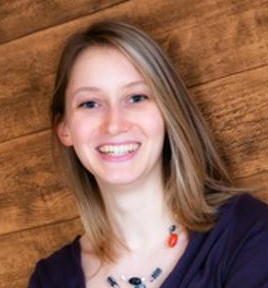
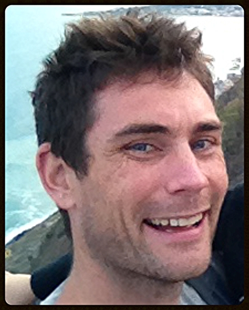
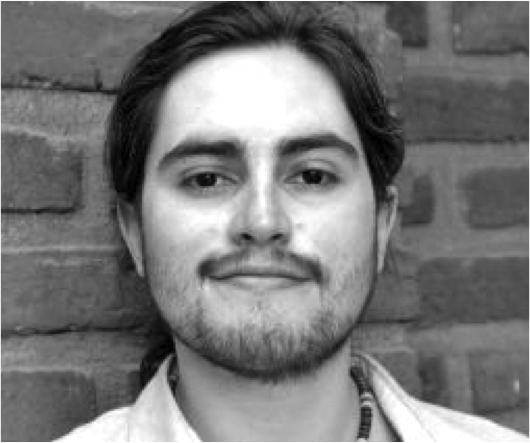

Matthew Apps
BBSRC AFL Fellow

matthew.apps@psy.ox.ac.uk
I completed a BSc training (2004-2007) in Psychology at Royal Holloway, University of London (RHUL) before being awarded an ESRC 1 + 3 open competition studentship to complete an MSc at Reading University (2007-2008) and a PhD in cognitive neuroscience supervised by Prof. Narender Ramnani at Royal Holloway (2008-2011). I then worked as a Postdoc with Prof. Manos Tsakiris at RHUL before moving to Oxford to work with Prof. Masud Husain's Cognitive Neurology group in 2013. I am currently a BBSRC Fellow.
In my 3-year BBSRC AFL Fellowship I aim to provide a framework for understanding the behavioral and neural mechanisms that underpin effort-based decision-making and trait levels of motivation in healthy people (i.e. Apathy). In collaboration with Prof. Masud Husain and Prof. Matthew Rushworth I will use a combination of behavioral tasks, computational modelling, fMRI and TMS. In addition, I aim to understand the mechanisms that underlie motivational impariments in psychiatric and neurological conditions.
CV
Tanja Mueller
DPhil candidate

tanja.mueller@psy.ox.ac.uk
I received a B.Sc. in Psychology from the University of Freiburg (Germany) before working as a research intern at Stanford University School of Medicine and the VA Palo Alto Health Care System in a project evaluating the effects of a breathing training and sleep hygiene treatment on psychological and physiological hyperarousal in veterans with PTSD. I then completed an international M.Sc. program in Neuro-Cognitive Psychology at the Ludwig-Maximilians-University Munich, focusing on research on visual attention and perception, and spent a term at St Catherine´s College Oxford studying Quantitative Methods and Social Psychology. I am currently a Ph.D. Student at the Department of Experimental Psychology and New College, University of Oxford.
My present research is focused on the cognitive and neurobiological mechanisms that underlie our motivation and decisions about whether to engage in a task, particularly when we become fatigued over time. To look at these questions, I use cost-benefit decision-making paradigms in combination with fMRI and computational modelling approaches. In another but somewhat related line of research, I am investigating how social context influences our visual attention by using behavioral and electrophysiological measures.
Dr. Campbell Le Heron
DPhil candidate

campbell.leheron@ndcn.ox.ac.uk
After completing my undergraduate medicine studies at the University of Otago in New Zealand, I worked as a doctor in Melbourne, Australia, before undertaking advanced training in Neurology. I was awarded an ANZAN overseas training fellowship to complete my Neurology training at the John Radcliffe Hospital in Oxford, UK and finished this in mid 2014. Throughout my training I have had the opportunity to treat, and the share the experience of, a broad range of people suffering from different neurological disorders. The myriad of problems these people experience give us insight into the normal functioning of the brain, and understanding these processes in turn allows us to develop treatments for these problems.
An important and unanswered question is why many people with neurological diseases lose their motivation, and my research is attempting to understand the underlying causes for this. I am focusing on how people integrate potential rewards and effort costs into their decisions and translate this into goal directed behavior, and how this normal process is affected by damage to basal ganglia and frontal brain regions.
I have been fortunate to be awarded both a Christopher Welch Scholarship in Biological Sciences, and a University of Oxford Clarendon Scholarship to assist me with this research. I am supervised by Prof. Masud Husain, Dr. Matt Apps and Dr. Mark Walton.
Luis Sebastian Contreras-Huerta
DPhil candidate

luis.contrerashuerta@psy.ox.ac.uk
Luis Sebastian Contreras-Huerta is a PhD student in the Department of Experimental Psychology, University of Oxford, supervised by Dr. Molly Crockett, Dr.Matt Apps and Dr.Geoff Bird. He holds an MSc in Neuroscience from University of Queensland, Australia, and a BA in Psychology from Universidad de Valparaíso, Chile. Prior to his studies in Oxford, he worked as academic director of the first MSc in Social Neuroscience program in Chile and as an associate researcher at Universidad Diego Portales. His research is focused on understanding the neural mechanisms underlying empathy and moral decision making in humans.
Collaborators
Prof. Masud Husain (University of Oxford)
Prof. Matthew Rushworth (University of Oxford)